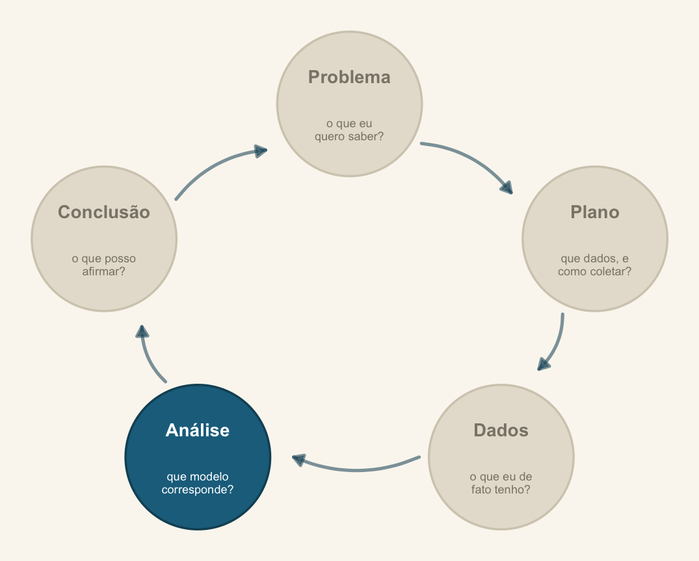
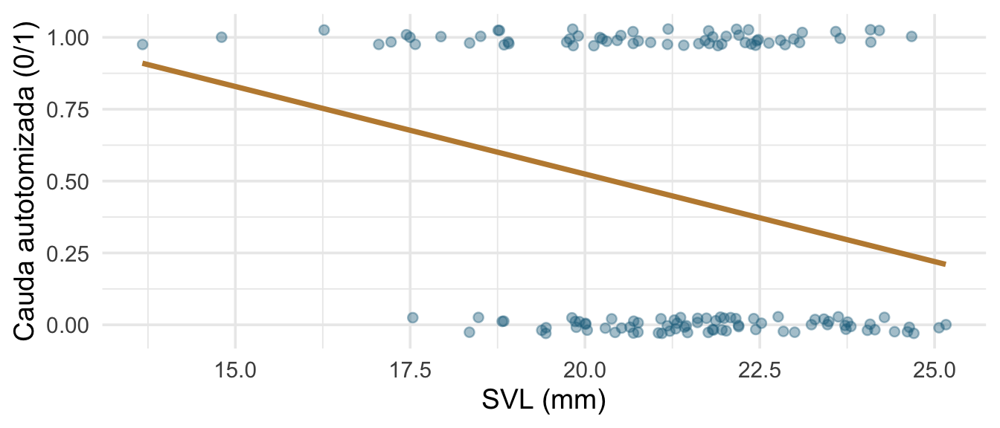
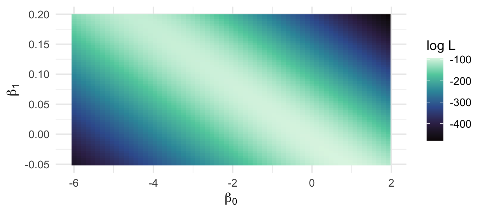
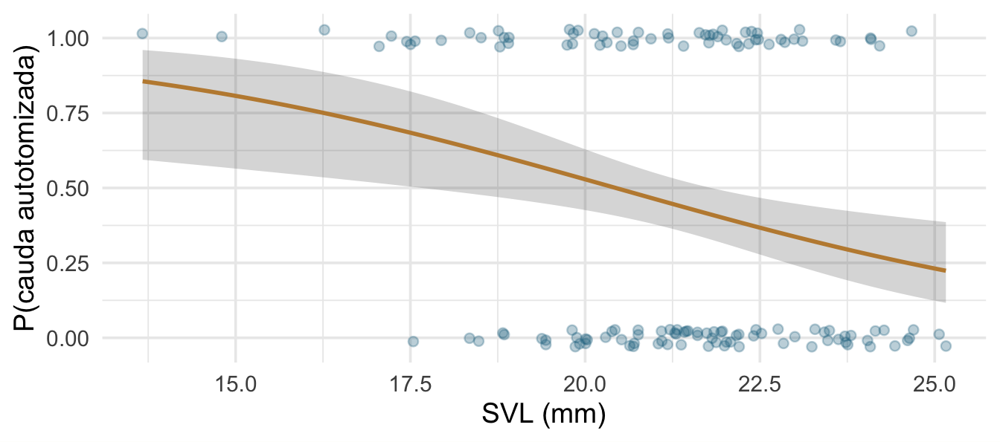
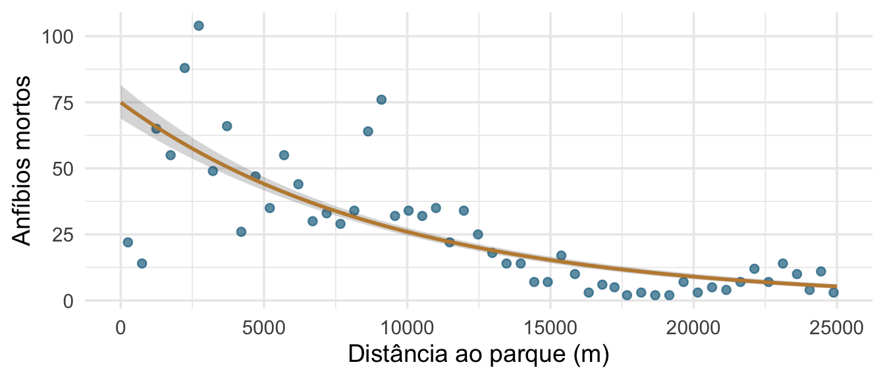
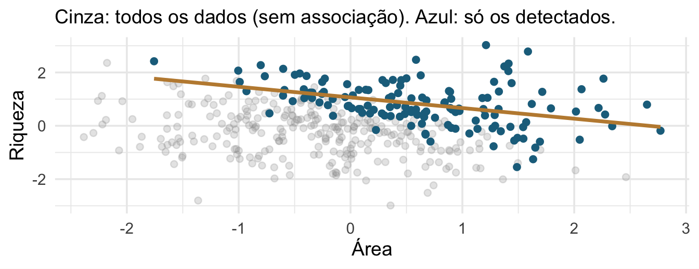

Encontro 5 · Análise de Dados Univariados · PPGBA/UFMS
23 de setembro de 2026

Análise — mas a pergunta “que covariáveis entram” é um retorno à etapa Problema: depende do que você quer estimar, não do que melhora o ajuste.
Ontem à tarde montamos o vocabulário. Hoje usamos.
GLM = preditor linear (Encontros 2 e 3) + distribuição da família exponencial (Encontro 4) + função de ligação entre os dois.
Nenhuma peça é nova. O que é novo é o algoritmo que as junta: máxima verossimilhança no lugar de mínimos quadrados.
Nos 223 lagartos, Tail_state indica se o indivíduo tinha ou não a cauda autotomizada (0/1).
Pergunta: lagartos maiores têm maior probabilidade de já ter perdido a cauda?
Em grupos, 10 minutos: que análise? E o que acontece se vocês simplesmente ajustarem lm(Tail_state ~ SVL)?
lm() não serve aqui
A reta prevê valores fora de [0, 1]; o resíduo só pode assumir dois valores para cada \(x\); a variância depende da média. Três premissas violadas de uma vez.
Verossimilhança: dado um valor candidato para os parâmetros, qual a probabilidade de observar exatamente os dados que eu observei?
A estimativa de máxima verossimilhança é o valor que torna os dados observados mais prováveis.
Mínimos quadrados é um caso particular: com erro gaussiano, minimizar a soma dos quadrados é maximizar a verossimilhança.
y <- lagartos$Tail_state
x <- lagartos$SVL
log_vero <- function(b0, b1) {
p <- plogis(b0 + b1 * x)
sum(dbinom(y, size = 1, prob = p, log = TRUE))
}
grade <- crossing(b0 = seq(-6, 2, .12), b1 = seq(-.05, .2, .004)) |>
mutate(ll = map2_dbl(b0, b1, log_vero))
ggplot(grade, aes(b0, b1, fill = ll)) +
geom_raster() +
scale_fill_viridis_c(option = "mako") +
labs(x = expression(beta[0]), y = expression(beta[1]), fill = "log L")
glm() devolve# A tibble: 1 × 3
b0 b1 ll
<dbl> <dbl> <dbl>
1 0.84 -0.05 -93.9(Intercept) SVL
5.381447 -0.263320 A busca em grade serve só para enxergar. O glm() usa mínimos quadrados reponderados iterativamente, que chega no mesmo lugar com muito menos esforço.
\[D = 2\left[\log L_{\text{saturado}} - \log L_{\text{modelo}}\right]\]
Distância entre o seu modelo e um modelo que acerta todas as observações. É a generalização da soma de quadrados residual.
Analysis of Deviance Table
Model 1: Tail_state ~ 1
Model 2: Tail_state ~ SVL
Resid. Df Resid. Dev Df Deviance Pr(>Chi)
1 138 191.07
2 137 181.82 1 9.2563 0.002347 **
---
Signif. codes: 0 '***' 0.001 '**' 0.01 '*' 0.05 '.' 0.1 ' ' 1A diferença de deviance entre dois modelos aninhados segue aproximadamente uma \(\chi^2\) com graus de liberdade igual à diferença de parâmetros. É o análogo do teste F do modelo linear.
Bernoulli — uma linha por indivíduo, resposta 0/1:
Binomial agregada — sucessos e fracassos por unidade:
A segunda forma é a dos dados de UV: 100 células por lâmina, das quais algumas são eosinófilos. Escrever Eosinophil/Total_Cell ~ ... sem o argumento weights joga fora a informação do tamanho amostral.
Estimate Std. Error z value Pr(>|z|)
(Intercept) 5.381447 1.94928083 2.760734 0.005767156
SVL -0.263320 0.09133058 -2.883152 0.003937168O coeficiente de SVL está em log-odds por milímetro. Ninguém pensa em log-odds. Vamos traduzir.
| Escala | Valor | Interpretação |
|---|---|---|
| log-odds (\(\eta\)) | \(-\infty\) a \(+\infty\) | escala do preditor linear |
| odds (\(e^{\eta}\)) | 0 a \(+\infty\) | razão sucesso/fracasso |
| probabilidade | 0 a 1 | o que a pergunta quer |
novo <- tibble(SVL = seq(min(lagartos$SVL), max(lagartos$SVL), length.out = 100))
pred <- predict(m_bin, newdata = novo, type = "link", se.fit = TRUE)
novo <- novo |> mutate(p = plogis(pred$fit),
lo = plogis(pred$fit - 1.96 * pred$se.fit),
hi = plogis(pred$fit + 1.96 * pred$se.fit))
ggplot(lagartos, aes(SVL, Tail_state)) +
geom_jitter(height = .03, alpha = .3, colour = "#1c6e8c") +
geom_ribbon(data = novo, aes(y = p, ymin = lo, ymax = hi), alpha = .2) +
geom_line(data = novo, aes(y = p), colour = "#c08a3e", linewidth = 1) +
labs(x = "SVL (mm)", y = "P(cauda autotomizada)")
Calcule a predição e o erro-padrão na escala do preditor linear, some e subtraia, e só então aplique a inversa da ligação. Fazer o contrário produz intervalos que saem de [0, 1].
É exatamente o que o código do slide anterior faz: type = "link", depois plogis().
prob_30mm.(Intercept) prob_35mm.(Intercept)
0.07459536 0.02114971
razao_de_chances.(Intercept) risco_relativo.(Intercept)
0.26804513 0.28352576 Os dois números diferem, e a diferença cresce quando a probabilidade base é alta. Diga qual você está relatando.
Analysis of Deviance Table
Model: binomial, link: logit
Response: cbind(Eosinophil, Total_Cell - Eosinophil)
Terms added sequentially (first to last)
Df Deviance Resid. Df Resid. Dev Pr(>Chi)
NULL 49 965.39
UV 4 31.151 45 934.24 2.851e-06 ***
Pigmentation 1 278.012 44 656.23 < 2.2e-16 ***
UV:Pigmentation 4 17.965 40 638.26 0.001254 **
---
Signif. codes: 0 '***' 0.001 '**' 0.01 '*' 0.05 '.' 0.1 ' ' 1Quando um preditor separa perfeitamente sucessos de fracassos, a verossimilhança não tem máximo finito: o coeficiente “quer” ir para o infinito.
Sinais: estimativa gigantesca, erro-padrão ainda maior, aviso de fitted probabilities numerically 0 or 1 occurred.
Soluções: regressão logística penalizada de Firth (logistf), ou priors fracamente informativas num ajuste bayesiano — que é o argumento do ROS, cap. 13.
Estimate Std. Error z value Pr(>|z|)
(Intercept) 0.161 0.271 0.592 0.554
EspeciePhyllopezus_pollicaris -2.140 0.506 -4.232 0.000
scale(CRC) 1.038 0.245 4.237 0.000Coeficiente em log da contagem esperada. Exponenciando:
Phyllopezus pollicaris tem uma contagem esperada 0.12 vez a de Hemidactylus agrius.
Com ligação log, os efeitos multiplicam a média em vez de somar. Um coeficiente de 0,7 significa “multiplica a contagem esperada por \(e^{0{,}7} \approx 2\)”, não “soma 0,7 parasitas”.
Isso costuma ser biologicamente mais plausível: o efeito de uma covariável escala com o tamanho da população, não é um acréscimo fixo.
Se os sítios foram amostrados por tempos diferentes, a contagem bruta não é comparável. Você quer modelar uma taxa.
\[ \log\!\left(\frac{\mu_i}{\text{esforço}_i}\right) = \mathbf{x}_i\boldsymbol{\beta} \quad\Longleftrightarrow\quad \log \mu_i = \mathbf{x}_i\boldsymbol{\beta} + \log(\text{esforço}_i) \]
offset() é um termo com coeficiente fixado em 1 — não estimado. É diferente de incluir log(esforço) como preditora comum.
deviance gl razao
390.896866 50.000000 7.817937 Na Poisson, a deviance residual deveria ser da ordem dos graus de liberdade. Aqui é quase 8 vezes maior. Isso se chama sobredispersão, e é o assunto da tarde.
nv <- tibble(D.PARK = seq(0, 25000, length.out = 120))
pr <- predict(m_rk, newdata = nv, type = "link", se.fit = TRUE)
nv <- nv |> mutate(mu = exp(pr$fit),
lo = exp(pr$fit - 1.96*pr$se.fit),
hi = exp(pr$fit + 1.96*pr$se.fit))
ggplot(RK, aes(D.PARK, TOT.N)) +
geom_point(colour = "#1c6e8c", alpha = .7) +
geom_ribbon(data = nv, aes(y = mu, ymin = lo, ymax = hi), alpha = .2) +
geom_line(data = nv, aes(y = mu), colour = "#c08a3e", linewidth = 1) +
labs(x = "Distância ao parque (m)", y = "Anfíbios mortos")
Nunca só o coeficiente em escala de link. Relate uma comparação concreta, na escala da resposta, com intervalo.
“A mortalidade esperada cai de X para Y indivíduos entre sítios adjacentes ao parque e sítios a 10 km dele (IC 95 %: …).”
Um revisor consegue julgar essa frase. β = −0,0001 ele não consegue.
O glm() aceita qualquer conjunto de preditoras. A escolha é sua, e ela decide se o coeficiente significa alguma coisa.
Controlar por mais variáveis não é sempre melhor. Há variáveis que, incluídas, introduzem viés onde não havia.
flowchart LR A[Área da poça] --> B[Riqueza de anuros] C[Precipitação] --> A C --> B B --> D[Detecção do observador] A --> D

Área e riqueza são independentes por construção. Condicionar na detecção cria uma associação negativa do nada.
Desenhe o DAG antes de rodar o modelo. Ele diz o que incluir — e a resposta quase nunca é “tudo”.
Um procedimento stepwise escolhe variáveis por ajuste, não por papel causal. Ele inclui colisores com prazer, porque colisores melhoram a predição dentro da amostra.
Predizer e estimar um efeito são objetivos diferentes, e pedem modelos diferentes. Voltamos a isso no Encontro 9.
cbind(sucesso, fracasso).offset(log(esforço)) para taxas.Leitura: Análises Ecológicas no R, cap. 8, seções sobre Poisson e quasi-verossimilhança.
À tarde: o que fazer quando a razão do slide 22 dá 7,8.
Análise de Dados Univariados · PPGBA/UFMS · 2026/2